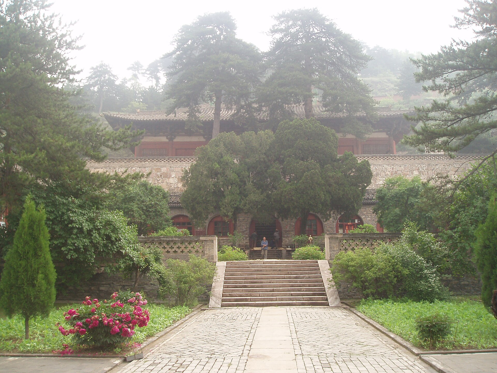

Architecture Detail Exhibition
佛光寺东大殿
中国现存最重要的唐代木构之一，适合用来理解早期木构建筑如何在极少装饰下呈现巨大的结构力量。
山西五台
唐
寺观
点击切换不同建筑，当前页面会同步更新图像、档案与讲解重点。

先看屋顶深远出檐，再看柱网和梁架比例，最后回到斗拱与阴影的关系。
建筑档案
先用最少的信息建立整体轮廓。
这类建筑最适合训练“从结构读气质”的能力，先看柱网，再看檐下阴影和整体比例。
重点解读
用三个角度，把建筑读得更深。
从 佛光寺东大殿 出发，你可以把这些阅读方法迁移到更多古建筑现场。
结构看点
柱网清晰，梁架比例浑厚，屋顶出檐深远。靠近后真正吸引人的并不是表面装饰，而是重量如何被有秩序地传递。
空间感受
殿身尺度凝练，屋檐带出的阴影边界很强，站在檐下时会感到空间有明显的压缩与庇护感。
文化意义
它保留了中国木构在成熟早期的关键样貌，也是理解唐风建筑不可绕开的样本。
观看路线
跟着身体移动，建筑才会真正展开。
- 先退远看整体轮廓，确认屋顶曲线与殿身比例。
- 移动到侧面，观察出檐深度和柱列节奏。
- 最后停在檐下，读斗拱、梁架和阴影关系。